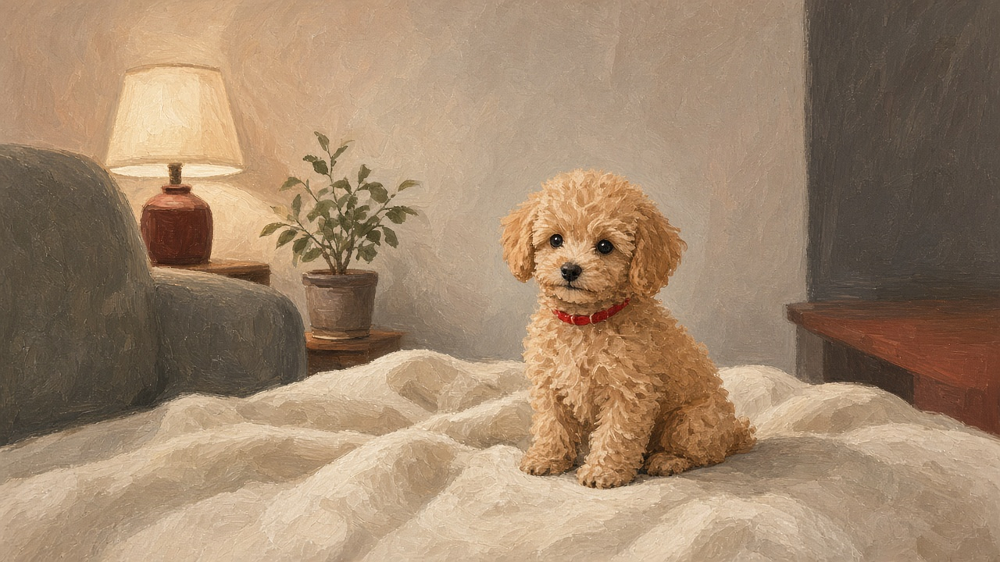

Home / Tear stains
Guide · Face
Tear stains on a toy poodle, without a product pitch
Rusty fur under the eyes is common. The eye itself still needs a vet if it looks unwell.
Short answer. Reddish fur under the eyes is common on light toy poodles. Moisture sits in the face coat and stains it. Wipe the corners with a plain damp cloth once a day, then dry the fur, and keep the hair under the eyes short enough to dry. Do not put whitening drops, peroxide, or human products in the eye. If the eye is red, cloudy, squinting, or has thick discharge, call a vet.

What the stain is
Tears are normal. They carry a little colour and, on a pale coat, leave a rust mark where the fur stays wet. The stain itself is a coat issue. The eye may still be healthy. Only a vet can tell those apart.
The daily habit
- Once a day, dampen a soft cloth with water. After meals is an easy time.
- Wipe from the inner corner outward. One gentle pass.
- Dry with a second cloth so the fur does not stay wet.
- Reward. This is the same handling practice as grooming.
Face handling in the first month is in the first 30 days guide. The wipe is that lesson, kept short.
Keep the face hair short
Hair that drinks the tear and sits on the skin keeps the stain going. A groomer can tidy the long hair under the eye and show you the safe line. Do not point scissors toward the eye.
The water bowl
A deep narrow bowl splashes the chin less than a wide shallow one. Change the water daily. This keeps the face drier. It is not a cure for an eye problem.
What to skip
- Whitening cosmetics and drops sold to bleach the fur.
- Peroxide, borax, toothpaste, or any human product near the eye.
- A new supplement because the label mentions stains.
Questions owners ask
Why does my toy poodle have red fur under the eyes?
Tears are normal. On a pale coat they leave a rust mark where the fur stays wet. The stain is a coat issue. Only a vet can say whether the eye itself is healthy.
How do I clean toy poodle tear stains at home?
Once a day, wipe from the inner corner outward with a soft cloth dampened with water. Dry with a second cloth. Keep the hair under the eyes short enough to dry. Do not use peroxide, whitening drops, or human products in the eye.
When should tear stains send a toy poodle to the vet?
Call a vet if one eye is suddenly worse, the dog is squinting or pawing, the eye looks cloudy, the discharge is thick, or the skin under the stain is swollen or broken.
Dry fur, and a vet if the eye looks wrong
The rust mark is what you can tidy. The eye is what you do not guess about.
Back to the circleOwner routines, not a veterinary diagnosis. Eye pain, cloudiness, and thick discharge belong with a veterinarian.